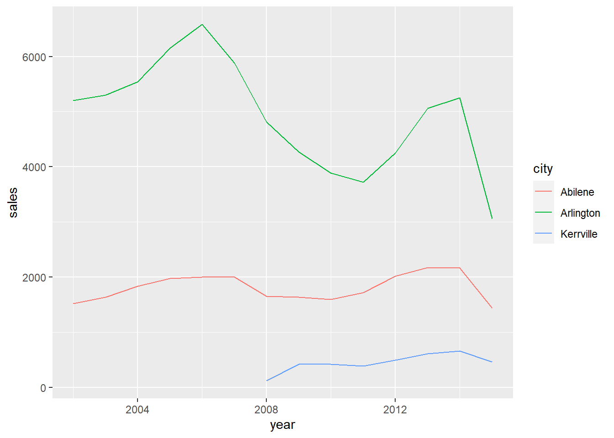

Run SQL from RStudio
If you are an R user, consider running SQL on your database directly from RStudio. By moving some of your data wrangling from R code to SQL you can use the power of the database while staying in RStudio with one code source.
To connect RStudio to Oracle use the new oracleConnectR R package. For all other database types follow the RStudio connect to a database guidance.
Write SQL in RStudio and execute in the database
To demonstrate how to run SQL on your database from RStudio we first create a temporary in-memory database using the RSQLite package. We then write the demonstration Texas Housing Sales data from the ggplot package into that temproary database.
library(tidyverse)
library(RSQLite)
library(DBI)
# Create an ephemeral in-memory RSQLite database
con <- DBI::dbConnect(RSQLite::SQLite(), dbname = ":memory:")
DBI::dbWriteTable(con, "txhousing",
ggplot2::txhousing,
overwrite = TRUE)Here, using the DBI pckage we send a SQL query to the database ready to be executed.
query <- DBI::dbSendQuery(con,
"SELECT city,
year,
sum(sales) as sales
FROM txhousing
WHERE year >=2002
GROUP BY city,
year
HAVING city IN ('Abilene','Arlington','Kerrville')
ORDER BY city,
year;")Finally, using DBI::dbFetch() we execute the SQL and pull the data from the database into a dataframe.
texas_df <- DBI::dbFetch(query)
head(texas_df)## city year sales
## 1 Abilene 2002 1516
## 2 Abilene 2003 1632
## 3 Abilene 2004 1830
## 4 Abilene 2005 1977
## 5 Abilene 2006 1997
## 6 Abilene 2007 2003We can now use the data frame, such as in a plot.
texas_df %>%
ggplot2::ggplot() +
ggplot2::aes(x = year,
y = sales,
colour = city) +
ggplot2::geom_line() 
dbplyr writes SQL for you
We can also use the dbplyr package to automatically create SQL code from dplyr code. Two good tutorials on this method are from data carpentry a Computing for the social sciences course.
Again, we set up a temporary database and write a table to it.
con <- DBI::dbConnect(RSQLite::SQLite(), dbname = ":memory:")
DBI::dbWriteTable(con, "txhousing",
ggplot2::txhousing,
overwrite = TRUE)To use the functionality of dbplyr we use dplyr::tbl() to tell dplyr that a table is in a database we have set up a connection for (called con).
library(dbplyr)
tble <- dplyr::tbl(con, "txhousing")We can now use that table in ordinary dplyr code like this.
texas <-
tble %>%
dplyr::filter(year >= 2002) %>%
dplyr::group_by(city,year) %>%
dplyr::summarise(sales = sum(sales, na.rm = TRUE)) %>%
dplyr::filter(city %IN% c('Abilene','Arlington','Kerrville')) %>%
dplyr::arrange(city,year) We can also view the SQL dbplyr has automatically created for us from the dplyr code.
texas %>% dplyr::show_query()## <SQL>
## SELECT *
## FROM (SELECT `city`, `year`, SUM(`sales`) AS `sales`
## FROM (SELECT *
## FROM `txhousing`
## WHERE (`year` >= 2002.0))
## GROUP BY `city`, `year`)
## WHERE (`city` IN ('Abilene', 'Arlington', 'Kerrville'))
## ORDER BY `city`, `year`Notice how ugly this SQL is copmpared to the SQL we wrote in the first section above. It does the same thing, but the dplyr code is the better SQL that is easier to read and QA.
We are now ready to execute the SQL written by dbplyr and pull the data into an R data frame using dplyr::collect(). Only at this point is the SQL executed on the database.
texas_df <- dplyr::collect(texas) Finally, we can plot the data and get the same plot as the previous DBI method where we wrote our own SQL.
texas_df %>%
ggplot2::ggplot() +
ggplot2::aes(x = year,
y = sales,
colour = city) +
ggplot2::geom_line()